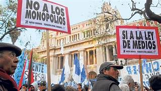

Debate de la Ley de Servicios de Comunicación Audiovisual
El debate de la Ley de Servicios de Comunicación Audiovisual se desarrolló en la Argentina durante 2009, a raíz del proyecto presentado por la presidenta Cristina Fernández de Kirchner.
La ley 26.522 de Servicios de Comunicación Audiovisual, promulgada el 10 de octubre de 2009, establece las pautas que rigen el funcionamiento de los medios radiales y televisivos en la República Argentina. Reemplazó a la Ley de Radiodifusión 22.285, que había sido promulgada en 1980 por la dictadura militar autodenominada Proceso de Reorganización Nacional y que se mantuvo vigente hasta la aprobación de la nueva ley.
Desde la recuperación de la democracia el 10 de diciembre de 1983, existió un amplio consenso sobre la necesidad de derogar la norma de la dictadura y sancionar una nueva ley, en consonancia con las necesidades cívicas y participativas de la democracia. Los presidentes Raúl Alfonsín en 1988 y Fernando de la Rúa en 2001 presentaron sendos proyectos de ley, pero no pudieron ser tratados debido a las fuertes presiones ejercidas por parte de los sectores involucrados.
En agosto de 2009, la presidenta envió un proyecto de ley a la Cámara de Diputados para reemplazar la ley de radiodifusión, luego de haber debatido por un año en veinticuatro foros que se desarrollaron en distintos puntos del país, una propuesta de proyecto de ley basada en veintiún puntos presentados por la Coalición por una Radiodifusión Democrática en 2004.
El proyecto de ley fue duramente criticado por un sector importante de la oposición (UCR, PRO, PJ disidente y Coalición Cívica), los grandes multimedios y las organizaciones de propietarios de medios tanto nacionales como internacionales. Durante el debate social que tuvo el proyecto, los grandes medios de comunicación lo denominaron sistemáticamente como «Ley para controlar a los medios»,3«Ley de medios K»,4«Ley K de medios»,5«Ley mordaza»,6«Ley de control de medios»7y «Ley contra los medios».
Por el contrario, fue apoyado por partidos de centroizquierda (Nuevo Encuentro, Proyecto Sur, Partido Socialista), radios comunitarias, todas las universidades nacionales, los sindicatos, organizaciones de derechos humanos, la ONU y organizaciones nacionales e internacionales de periodistas y trabajadores de prensa.